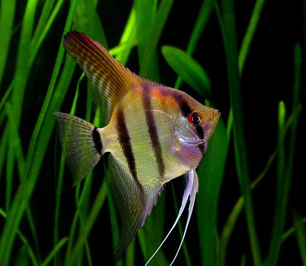

An observation-based hobby for someone who enjoys calm routines and learning about habitats.

01 / Meet the animal
Common types and appearance
Aquarium fish differ greatly in adult size, fin shape, colour, temperature needs and social behaviour. The photo here shows an angelfish, another species with a tall body and long fins.
Examples you may meet
Goldfish: Often orange, white or patterned, with a rounded body and visible fins; they need much more space than a bowl.
Guppies: Small livebearers; males often have bright colours and flowing tails.
Neon tetras: Small schooling fish with a bright blue stripe and red colouring. They should be kept in a suitable group.
These are examples, not a ranking of the best pets. Individuals can differ from typical descriptions.
02 / Food and water
What and how to feed
Choose a food made for the exact fish species and feed small amounts that can be eaten without leaving waste.
Research whether the species needs flakes, pellets, frozen food or plant material. Do not assume all fish eat the same food.
Remove uneaten food and test water regularly. Overfeeding pollutes the tank and can harm fish.
03 / Everyday life
A suitable home and daily care
Choose the species before buying the aquarium. Research adult size, group size, compatibility, temperature and water chemistry.
Set up a suitably sized filtered tank and establish the biological cycle before adding fish; test ammonia, nitrite and nitrate.
Perform regular partial water changes with treated water. A small unfiltered bowl is not a suitable shortcut.
04 / Keep watching
Health and further reading
Watch for gasping at the surface, clamped fins, unusual swimming or loss of appetite; check water quality first and seek advice from an experienced aquatic vet or specialist.
For more detailed care requirements, start with RSPCA fish care. Check species-specific needs with a qualified vet or rescue before bringing an animal home.